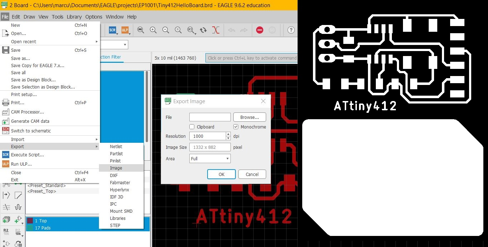
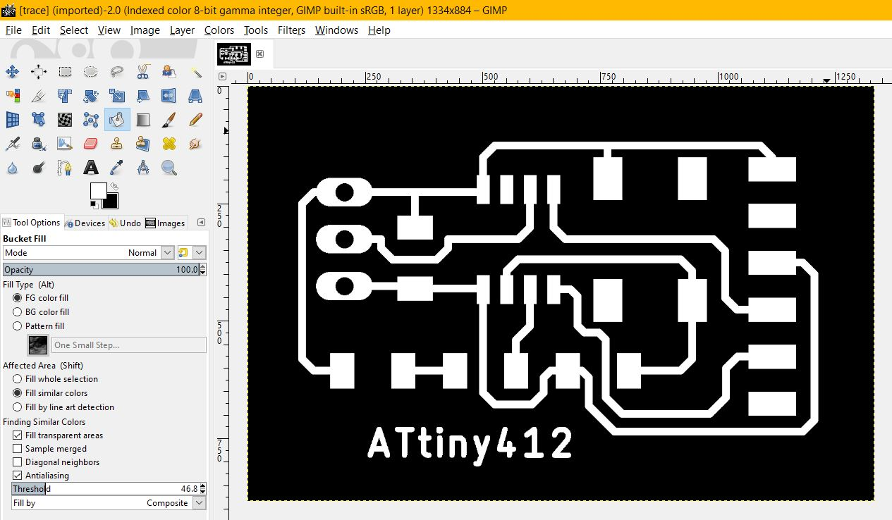
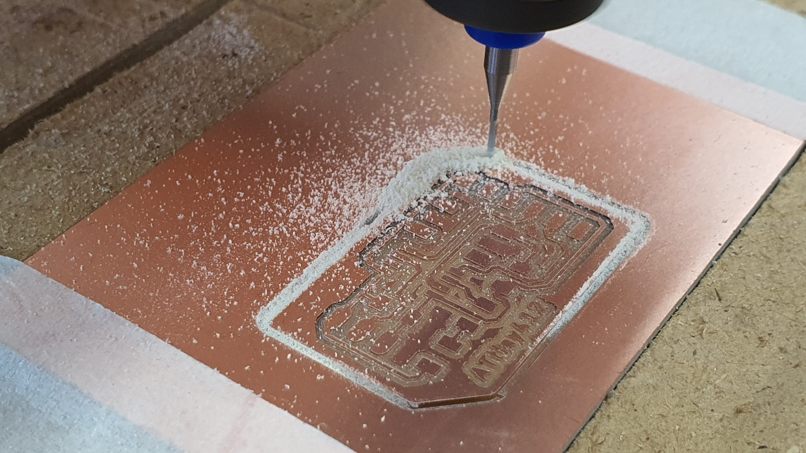
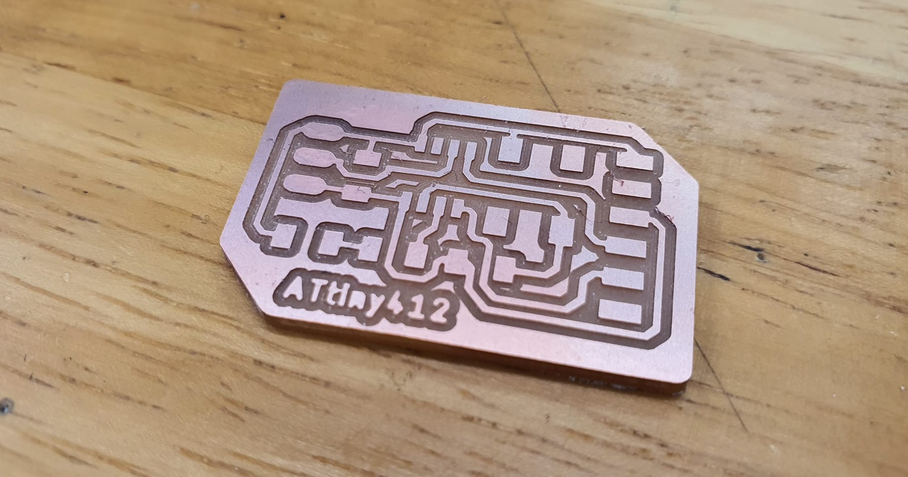
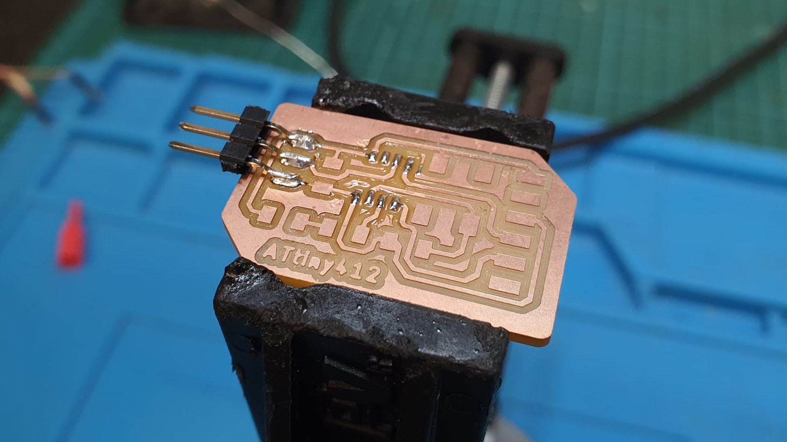
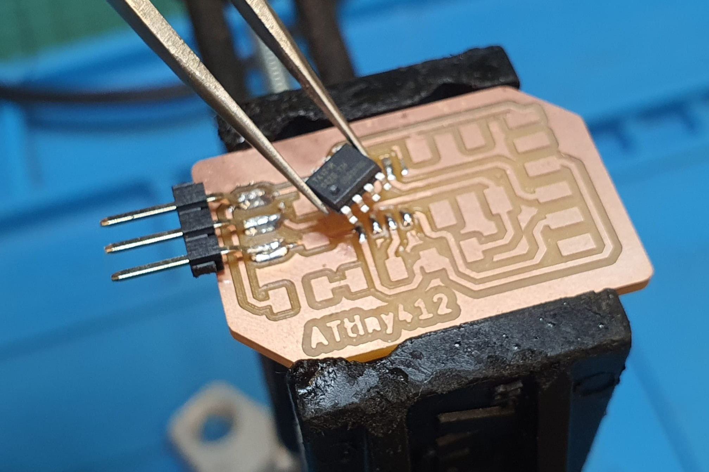
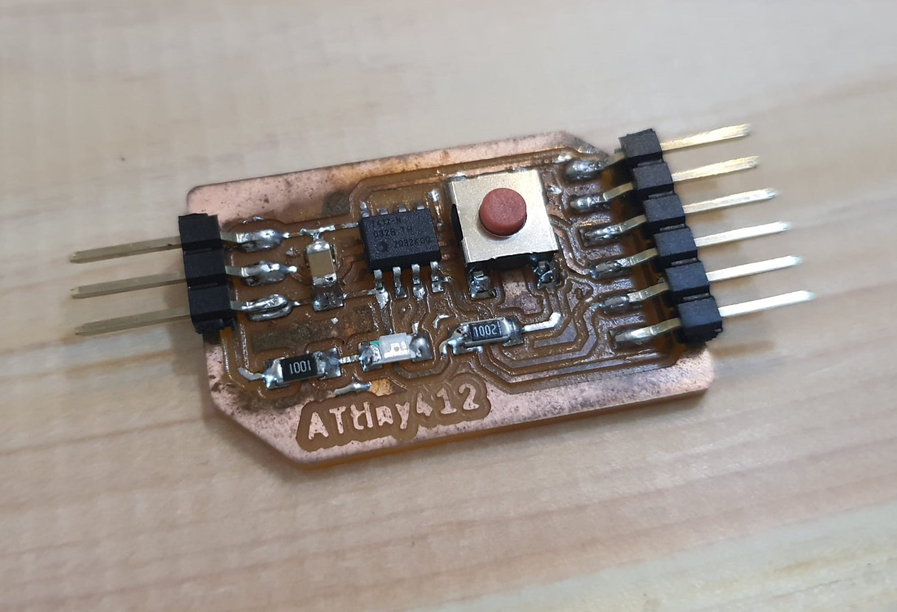

Electronics Design
Process of designing the ATtiny412 Hello Board
|
Before starting to design the PCB using EAGLE, i have to first download the Fab Lab library from the GitHub repo.
I downloaded it into documents > EAGLE > libaries |
 |
| Next i created a new project and new schematic. |  |
| Using the add part function, i insert the ATtiny412 chip and all the necessary components (headers, capacitors, resistors, 1x3 pinhead). Using Draw > Net, i connected the circuit accordingly to the schematic. |  |
| I named the components and keyed in the values for the resistors and capacitors. After designing the schematic, i switched to designing the board |  |
|
I arranged the components accordingly afer thet,using the "route" command and setting the line with to 16, i connected the components together.
After connecting the components, i used the miter command to round off the corners. lastly, i go to Tools > DRC > Check to check for any errors. |
  |
| Off the visibility of the layers except layers 1 & 17 and export the file as an image to obtain the traces required for the g-code. |  |
| Open file in gimp to edit the image to prepare it for the mods software to produce the g-code. |  |
| I imported the images into the mods software to generate the g-code and loaded the g-code file into the Stepcraft software. This time i used the 20deg X 0.1 mill. Next, i secured the PCB using double sided tape and masking tape and set the X, Y, & Z axis. After that i can start the milling operation. |  |
| After fabricating the PCB, i started to solder the components to the board. Firsly, i added a bit of flux to the board then i applied solder to the contacts. Using tweezers, is positioned the components on the board and melted the solder to secure it to the board. |  |
| Finished ATtiny412 |  |